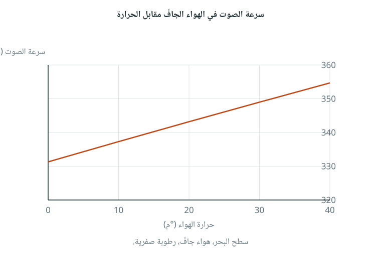

لماذا يسبق الصوتُ المطرَ في اليوم الحار؟
Sound speed rises with the square root of temperature
سرعة الصوت في الهواء تزيد 0.6 متر/ثانية لكل درجة مئوية تقريبًا: 331 م/ث عند الصفر و343 عند عشرين و355 عند أربعين. الفارق يفسّر تأخّر الرعد وتأخّر سماع الأذان بين الحيَّين.
الصوت موجة ضغط تنتقل خلال تصادم الجزيئات، وسرعتها تعتمد على سرعة الجزيئات نفسها لا على شدّة النداء. الحرارة هي مقياس متوسط طاقة حركة الجزيئات، فكلما ارتفعت تحرّكت أسرع ونقلت الموجة أسرع. العلاقة ليست خطية تمامًا بل مع الجذر التربيعي للحرارة المطلقة، لكنها في نطاق الطقس اليومي تقترب من 0.6 متر/ثانية لكل درجة.
الآلية
كيف يحدث الأمر على مستوى الجسيمات أو المتغيّرات المباشرة
الموجة لا تنقل هواءً من المصدر إلى الأذن بل تنقل اضطرابًا: طبقة تضغط التي تليها وتخلخل أخرى. سرعة الانتقال تحكمها مرونة الوسط وكثافته، وفي الغاز تختزل إلى دالة في الحرارة وحدها لأن الكثافة والمرونة تتغيّران معًا بتغيّر الحرارة فيُلغي أحدهما أثر الآخر، فيبقى الضغط خارج المعادلة والتركيب الكيميائي يدخل عبر كتلة المول فقط.
الأرقام والوحدات
العلاقات والوحدات والنطاقات العددية التي تسند الشرح
بالصيغة 331.3 × الجذر(1 + الحرارة المئوية ÷ 273.15): 331.3 م/ث عند الصفر، 337.3 عند عشرة، 343.2 عند عشرين، 349.0 عند ثلاثين، 354.7 عند أربعين. ومسافة الرعد تُقدّر بثواني الفارق بين البرق والصوت مضروبة في السرعة: عشر ثوانٍ عند 20 درجة تعني نحو 3.4 كيلومتر.
الفرق الدقيق
المفهوم الملتبس الذي يُخلَط به، وأين ينفصلان
سرعة الصوت ليست سرعة الريح؛ الريح تضيف أو تطرح من سرعة الريح فقط لأنها تحرّك الوسط كله. والثاني: الضغط لا يغيّر السرعة في الغاز المثالي، فالصوت في الهواء عند سطح البحر وفي مرتفعات رقيقة متساوي الحرارة تقريبًا — خلافًا للحدس الذي يربط الصوت بكثافة الهواء مباشرة.
حدود التعريف
أين ينكسر التعريف أو النموذج وما الذي لا يفسّره
الأرقام لسطح البحر في هواء جافّ؛ الرطوبة ترفع السرعة قليلًا (نحو 0.1–0.6%) لأن بخار الماء أخفّ من الهواء. وفي طبقات الجو يتغيّر الوضع: فوق 11 كيلومترًا تهبط الحرارة فينخفضت السرعة، وهو سبب ظاهرة القناة الصوتية التي تحمل الصوت بعيدًا عبر الطبقات.

| الكمية | القيمة | المصدر |
|---|---|---|
| سرعة الصوت عند 0 °م | 331.3 m/s | [1] |
| سرعة الصوت عند 20 °م | 343.2 m/s | [1] |
| سرعة الصوت عند 40 °م | 354.7 m/s | [1] |
| الزيادة لكل درجة مئوية | 0.59 m/s | [1] |
المصادر
- 1 Engineering ToolBox — Speed of Sound in Air — Engineering ToolBox. www.engineeringtoolbox.com/speed-sound-d_82.html · اطُّلع عليه 2026-11-16
- 2 OpenStax College Physics 2e — Flow Rate and Its Relation to Velocity — OpenStax. openstax.org/books/college-physics-2e/pages/12-1-flow-rate-and-its-relation-to-velocity · اطُّلع عليه 2026-11-16
راجعه: مراجعة آلية — ديوان المعرفة (أرقام محسوبة + مصادر متحققة) 2026-11-16 · 2026-11-16 · آخر تحديث 2026-11-16
رجوع إلى المقالات